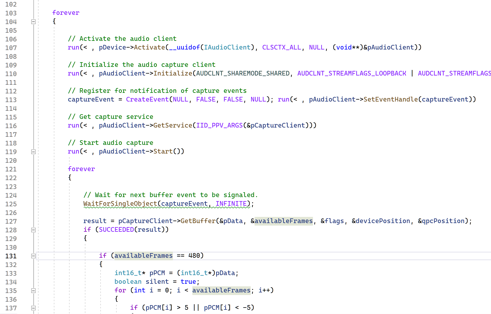

Welcome!
Who am I?
Hello! My name is Tiger Yang...
...and ever since becoming interested in frontend web development, I've always been into pushing the boundaries of what's possible with the medium and creating online experiences that others won't soon forget.
Browser compatibility often finds itself at the bottom of my priorities, as I employ the most experimental and cutting-edge APIs to make my dreams into reality.
I also highly prioritize optimization. The stereotype of websites being fundamentally slower than native apps is something I wish to fight, and because of that, I tend to never use third-party libraries and frameworks, as in my mind, "nothing" will always be faster than "anything".
A picture I took of myself at a cat cafe
My Interests in Employment
In an employment setting...
...I feel the most comfortable designing for modern websites that employ avant-garde design patterns and styles.
I wish to be provided the freedom to experiment with cutting-edge web technologies and APIs, as well as poke at established web design rules and standards.
I also wish for an employer who views their employees as equals instead of subordinates, and who is open to feedback and suggestions from me as well as others.
However, I will absolutely concede to frameworks and compatibility guidelines if the particular project demands it.
Project One: Remote Desktop
Description
Shortly after graduation from high school, I had what I considered to be a brilliant idea. Instead of splurging on a high-performance laptop that was thick, heavy, power-hungry, hot, and un-upgradable, I could use remote access software to control my home computer from my existing laptop, repurposing all the money I saved into upgrading my home computer to be more powerful than any laptop could achieve. However, I gradually ascertained that all existing remote access software had pain points of various kinds, such as unreliable connections, aggressive bandwidth hogging, unacceptably high latency, and audio-video sync problems. This eventually led me to attempt to write my very own remote access software from scratch.
Process Analysis
I wanted my solution to be as fast and optimized as possible, and that would require programming in a "low-level" compiled language, like C++, which allows for direct interfacing with the APIs I wish to utilize. Case in point, Windows' Desktop Duplication API to capture the framebuffer of the screen directly in the video card's memory, and Nvidia's Video Codec SDK to compress each frame into a High Efficiency Video Codec (HEVC) bitstream using dedicated chips located on the video card itself.

Screenshot of a section of the code that handles video
For audio, I interfaced with Windows' Audio Session API (WASAPI) to capture the system audio and compress it using LibOPUS into an OPUS bitstream.
Screenshot of a section of the code that handles audio
For mouse and keyboard emulation, I originally wanted to use various APIs afforded to accessibility tools, but I quickly realized that nothing offered by Windows would work on the secure desktop, which is active on the sign-in screen, as well as when User Account Control (UAC) prompts appear. Therefore, I pivoted to using a "Raspberry Pi" mini-computer which attaches to the target computer via USB and uses the connector's On-The-Go (OTG) functionality to masquerade as a keyboard and mouse.

Photo of the Raspberry Pi I used to control the computer
For the connecting client, I decided to write a website using Javascript and its WebTransport, WebCodecs, Canvas, and Web Audio APIs to communicate with the server, decode the arriving video and audio bitstreams using the client device's hardware or software decoders, and display the decoded video and audio frames to the user.

Screenshot of a section of the client JavaScript code
Reflection
In the end, while I had gotten further than I could have ever expected, the software still wasn't quite at the level that I had hoped. Emulating mouse and keyboard input via an external OTG device isn't a particularly latency-friendly approach, and the display feed still cuts off when on the secure desktop. However, my program was more than functional enough when I decided to cease development, and I then proceeded to extensively use this program I created for the next few semesters of university.
Despite what one might expect, I came out of this experience with an even stronger drive to write my own software to achieve maximum performance.
Project Two: Ethos, Style Guide, and Website
Description
Throughout the university course IAT 339 Web Design and Development, I was tasked with crafting a unique design ethos, using it to create a style guide, and using that to build a full-on website. While admittedly involved, I assumed this process would be relatively linear and straightforward. However, I was wrong.
Process Analysis
Because I wanted to create something unique, I explored avante-garde website designs and design patterns online until my eyes were caught on a design language known as Glassmorphism. I am a big fan of background blur and the calm intimacy it brings to any user interface, as well as frosted textured glass, so I believed Glassmorphism would be an excellent design language to adopt for my website.
UI element mockups employing Glassmorphism: https://medium.com/
Unfortunately, it was mid-development when I realized that backgrounds are a requirement for Glassmorphism to work, as there needs to be something behind the glass for it to refract and interact with. I tried many different things but ultimately could not construct a satisfactory background within the time allotted.
So I went exploring styles again and decided to switch from Glassmorphism to a different design language called Neumorphism, which involves light and dark shadows to convey filleted slabs of concrete or other off-white material. Designing with Neumorphism stipulates a fully flat and detail-less background to shift full attention to the shadows and contours.

UI element mockups employing Neumorphism: https://uxdesign.cc/
However, with the design language solved, various other issues began to rear their heads. These issues included the shadow details taking up too much space, the black and white shadows preventing the background from being full black or white, problems of affordance and conveying functionality for interactive elements, and more. Overall, my site just didn't feel "real" or "authentic", and instead looked like a university web design project.

University-web-design-project looking website that I had so far
So with a heavy heart, I made the decision to renounce the unique design ethos I had been building since the beginning and start over with a less lofty design goal. I still wished for my site to be fully modern and minimalist, however, and after extensive searching, I came across a template that was perfect, in my opinion.

Totally modern and minimalist website template: https://elements.envato.com/
After familiarizing myself with the design language, namely the expansive title background, the floating navigation bar, and the rounded image elements, I went and redesigned my site, employing this language till I was finally happy with what I got.

My redesigned site employing the totally modern and minimalistic site template I found
Reflection
While this project was successful in the end, it taught me an important lesson regarding new-fangled design patterns and languages. While experimentation is the key to innovation in any field, there is a reason these avante-garde design languages are barely used in the industry.